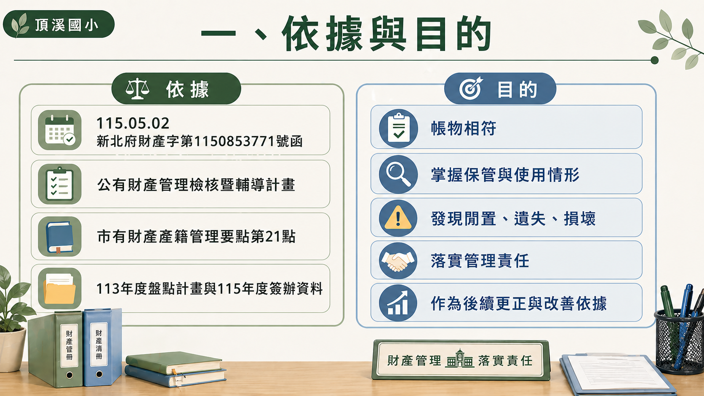
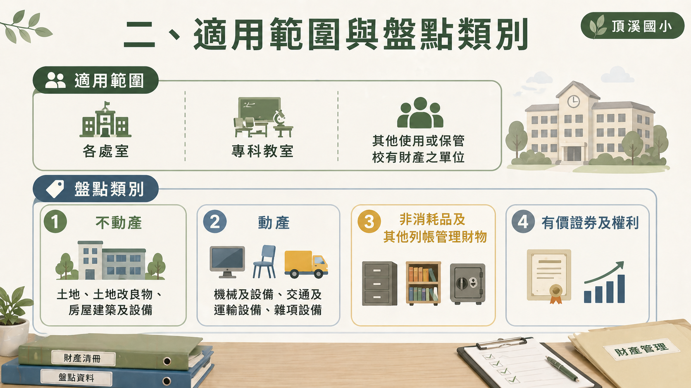
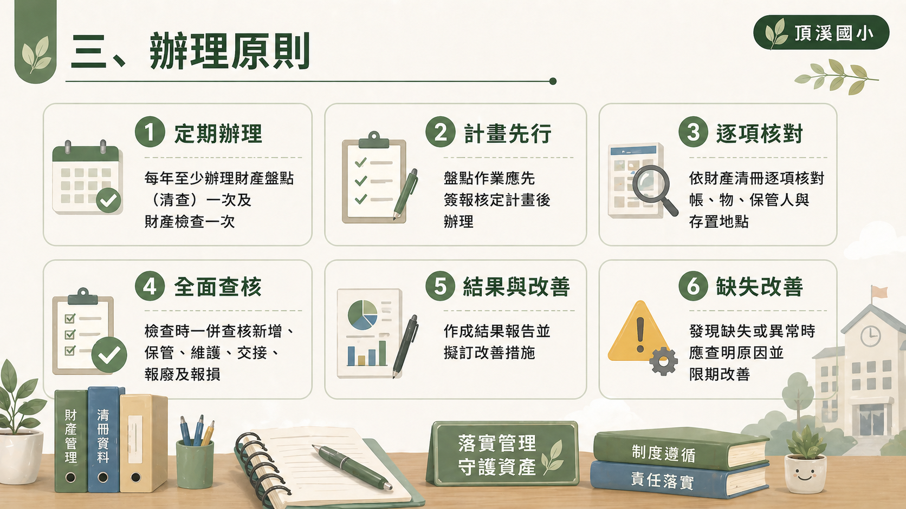
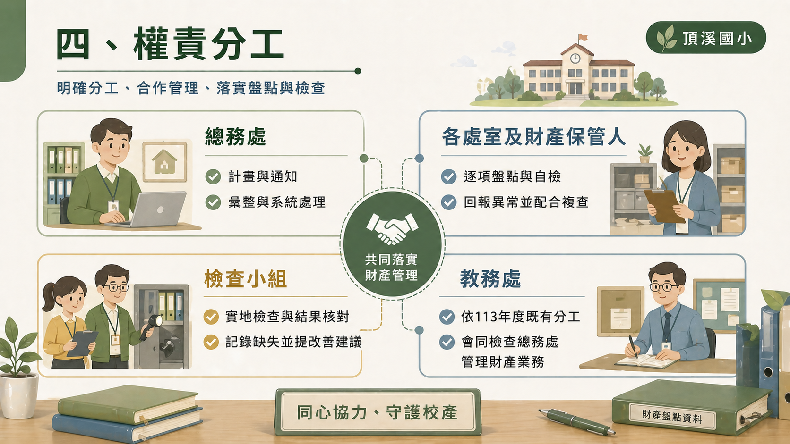
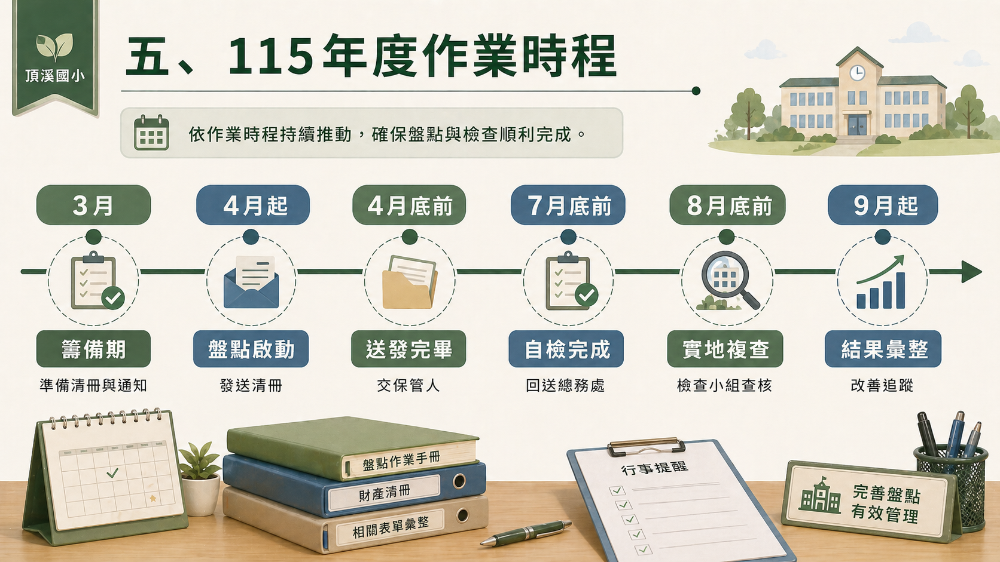
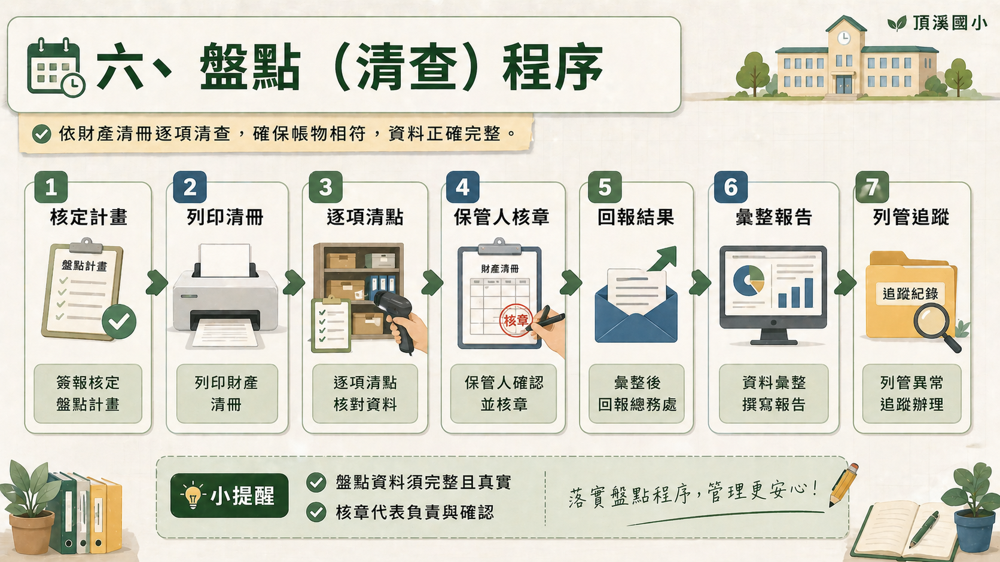
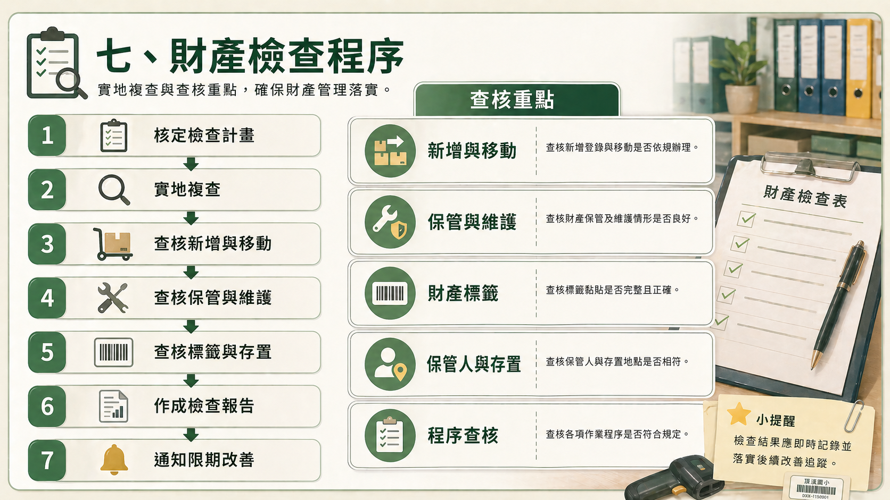
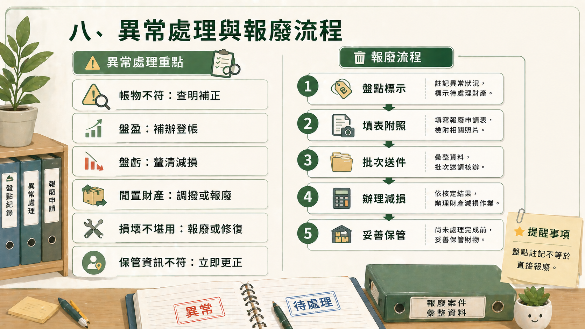
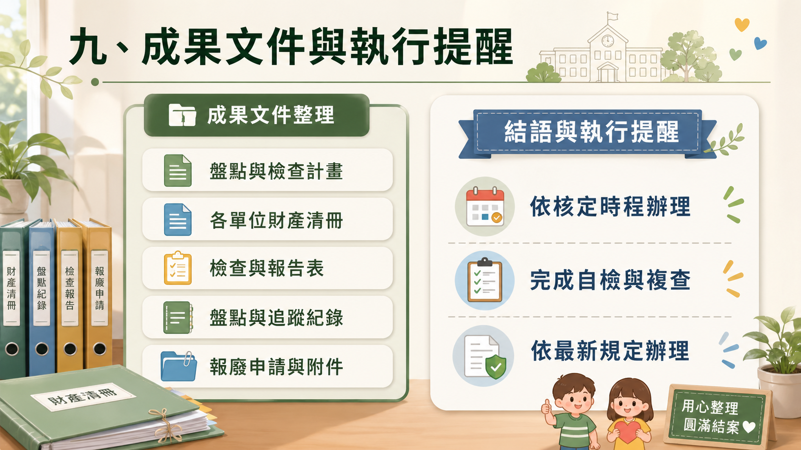

校內行政說明簡報
115年
財產盤點準則
依據本校 115 年度財產盤點與檢查需求整理，協助各單位掌握盤點、檢查、異常處理與後續追蹤重點。
主視覺預留區
依據本校 115 年度財產盤點與檢查需求整理，協助各單位掌握盤點、檢查、異常處理與後續追蹤重點。
本年度財產盤點與檢查作業，係依上級函示、財產管理規定及本校既有作業模式辦理，核心目標不是只完成點收，而是把管理基礎做穩。

本準則適用於本校各處室、專科教室及其他使用或保管校有財產之單位，從校舍到設備、從非消耗品到權利資料，都在盤點範圍內。

土地、土地改良物、房屋建築及設備
機械及設備、交通及運輸設備、雜項設備
其他列帳管理之財物
依帳載資料核對文件與登載內容
要把帳、物、人、地點都核對清楚，也要把後續報告、改善與追蹤一起完成，才能形成完整的財產管理閉環。

每年至少辦理一次財產盤點（清查）與一次財產檢查。
盤點與檢查作業都應先簽報核定計畫後再辦理。
依財產清冊核對帳、物、保管人與存置地點。
檢查時應一併查核新增、保管、維護、交接、報廢及報損。
盤點與檢查後均應作成結果報告並擬訂改善措施。
發現缺失或異常情形時，應查明原因並限期改善。
分工清楚，盤點工作才不會停留在單一窗口，而能變成全校共同配合、共同完成的管理機制。

各單位只要抓住節點，就能在整體時程內完成盤點、自檢、複查與後續帳務修正。

籌備期，完成計畫草案、簽核程序，備妥清冊及通知單。
盤點清查啟動，列印並分送財產清冊，通知開始清點。
動產與非消耗品清冊紙本資料送發各財產保管人。
各處室完成自檢，並送回核章後清冊與檢查資料。
檢查小組辦理實地複查。
彙整結果、辦理改善追蹤及帳務修正。
盤點程序重點不在「點過就好」，而在資料回收完整、異常註記清楚、後續追蹤能落實。

總務處簽報校長核定財產盤點（清查）計畫。
列印各單位財產清冊及相關表件。
各單位依清冊逐項清點財產，確認帳物是否相符。
各財產保管人於清冊「保管人」欄核章。
各單位送回盤點結果、異常註記及必要說明。
總務處彙整後作成盤點結果報告表及改善措施。
財產檢查比盤點更進一步，重點在查核管理品質與程序完整性，而不只是核對實物存在。

盤點與檢查的價值，在於異常發現後能立即更正、補辦、追蹤；其中報廢程序不能直接由盤點註記取代。

查明原因，補正帳籍或補辦程序。
查明來源、責任與減損程序，完成補正或登帳。
評估校內調撥、移撥或報廢。
依規定辦理報廢、報損或修復。
成果文件是後續查核、改善、帳務修正與制度修正的重要依據，也是在校內持續推動財產管理的重要基礎。
